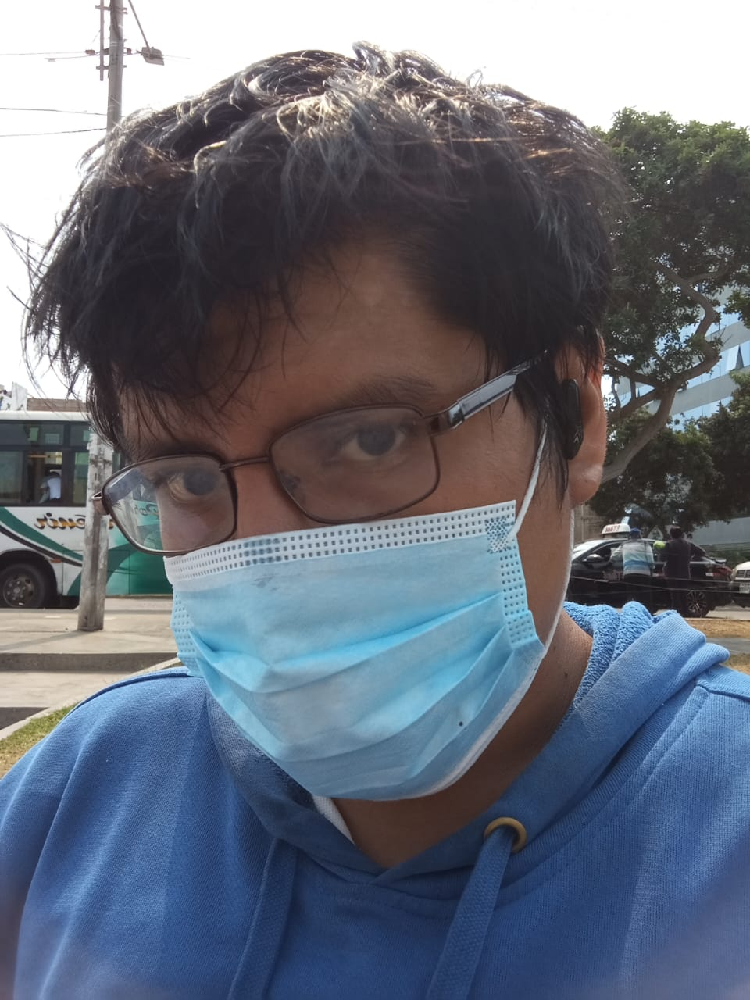

Datos Personales

Apellidos y Nombres: Jhon Anthony Llanos de la Cruz
Descripción personal: Soy un apasionado de la informática y la tecnología, siempre buscando aprender y mejorar en mi área.
Valores: Me caracterizo por mi compromiso, responsabilidad y perseverancia en todo lo que hago.
Enlace a Redes sociales: Facebook
Programa de estudios: Computación Informática
Horario de clases:
- Martes:
- 14:00 - 14:45: Herramientas
- 14:45 - 15:30: Herramientas
- 15:30 - 16:15: Herramientas
- 16:15 - 17:00: Multimedia (Teoría) - Ing. Percy Perez
- Miércoles:
- 16:15 - 17:00: TML (Teoría) - Ing. Javier Otiniano
- Jueves:
- 14:00 - 14:45: Animación de Gráficos (Laboratorio) - Ing. Luis Mendoza
- 14:45 - 15:30: Animación de Gráficos (Laboratorio) - Ing. Luis Mendoza
- 15:30 - 16:15: Animación de Gráficos (Laboratorio) - Ing. Luis Mendoza
- Viernes:
- 14:00 - 14:45: Diseño Web (Laboratorio) - Ing. Javier Otiniano
- 14:45 - 15:30: Diseño Web (Laboratorio) - Ing. Javier Otiniano